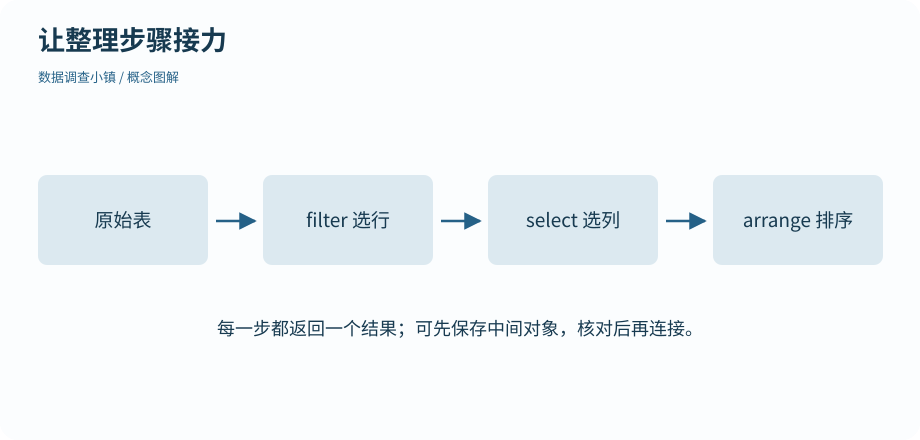

第 13 节 · 整理工坊
增加工具，连接步骤
装过一个包，为什么重启后还要加载？
区分安装与加载，使用命名空间和原生管道。
本节目录
运行位置：打开练习包内的 r-lab.Rproj，在项目根目录运行本节脚本。安装与准备见第 02—04 节；第 13 节说明扩展包。
装到磁盘，与带进会话
基础 R 已能完成很多工作。为了把整理与绘图写得更清楚，现在补充四个包：dplyr、tidyr、stringr 和 ggplot2。在项目中显式运行一次 source("setup.R") 安装它们；这一步需要联网。之后重新打开 R，使用某个包时仍要加载，或用 包名::函数名 调用。
安装是把文件放到包库，加载是让当前会话使用其中的功能。分析脚本不会遇到缺包就悄悄安装，以免一次普通计算突然改变环境。若缺包，先完成环境准备，再重跑。
# 数据调查小镇 · 第 13 节
# 在 r-lab 项目根目录运行；输出只写入 results。
# 安装只做一次；加载发生在每次新会话。setup.R 是单独的安装入口。
suppressPackageStartupMessages(library(dplyr))
x <- c(26, 28, 30)
print(round(mean(x), digits = 1))
print(x |> mean() |> round(digits = 1))
print(dplyr::filter(data.frame(temperature = x), temperature >= 28))[1] 28 [1] 28 temperature 1 28 2 30
同名工具，写清来自哪里
命名空间帮助区分同名函数。dplyr::filter() 明确调用 dplyr 的筛选函数；只写 filter() 时，实际使用哪个同名函数取决于当前环境。遇到奇怪结果，可以先检查函数来源。
本课用 suppressPackageStartupMessages(library(dplyr)) 让参考输出集中于数据；它只抑制加载时的提示，不会把运行错误和普通警告一并隐藏。日常首次加载时，读一遍提示通常有帮助。
管道把结果送往下一步
原生管道 |> 将左侧结果传给右侧函数，通常作为第一个参数。因此 x |> mean() |> round(digits = 1) 可以按从左到右的顺序读成“取 x，求均值，再保留一位小数”。
图解 · 让整理步骤接力

每一站接收上一步结果，再交给下一站。示意中的管道顺序是选行、选列、排序；每步都可以停下来核对。
放大查看 ↗ 保存 SVG ↓管道不会自动保存结果；仍然需要在最前面赋值。它也不会让所有函数都具备同样的参数位置，遇到复杂调用时可以先拆成中间对象，确认输入与输出。
旧代码里的另一种写法
你可能在其他资料里看到 %>%。那是来自相关包生态的管道，简单例子的读法相近，但占位符等细节不同。本教材统一使用 R 自带的 |>，先把一种方式学清楚，再查附录中的旧代码对照。
包安装失败时，先保留完整错误信息并查看系统与 R 版本。不要直接把另一个环境里的包库路径硬接进来；编译依赖可能不匹配。常见安装排查和版本复现方法放在附录中。
动手试试
区分三个动作
install.packages("dplyr")、library(dplyr)、dplyr::filter() 各完成什么？
给我一点提示
分别想成准备文件、加载工具、明确调用函数。
查看参考解法与解释
install.packages() 安装；library() 为当前会话加载；dplyr::filter() 明确使用 dplyr 的函数，前提是包已安装。
带走这一点
包先安装再使用，命名空间说明函数来自哪里，管道把上一步的结果传给下一步。下一节用几种含义明确的整理操作，逐步把公园记录变成需要的表。
检查一下理解
x |> mean() 会自动创建 mean 对象吗？
查看解释
管道连接计算，不替代赋值或文件写出。